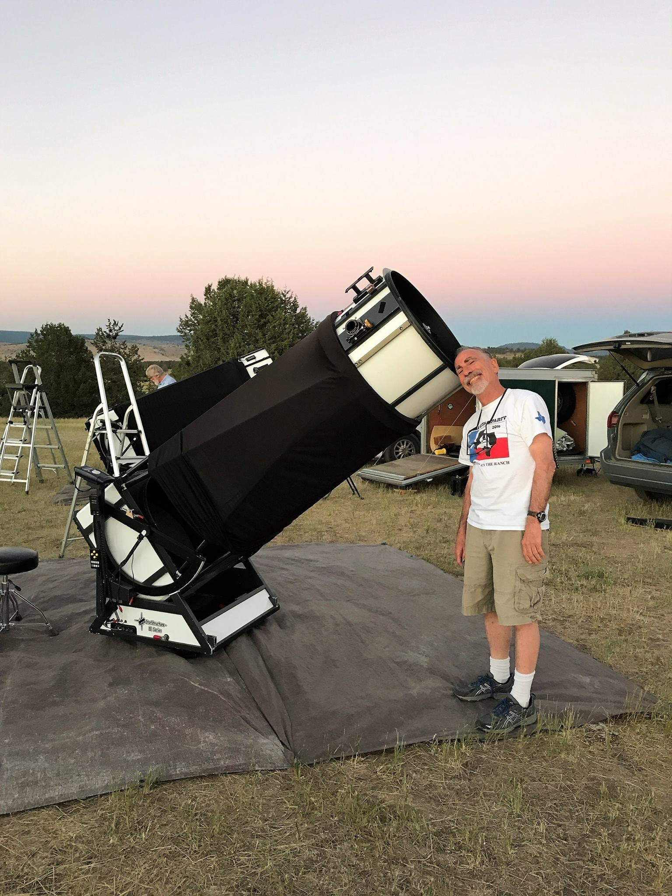
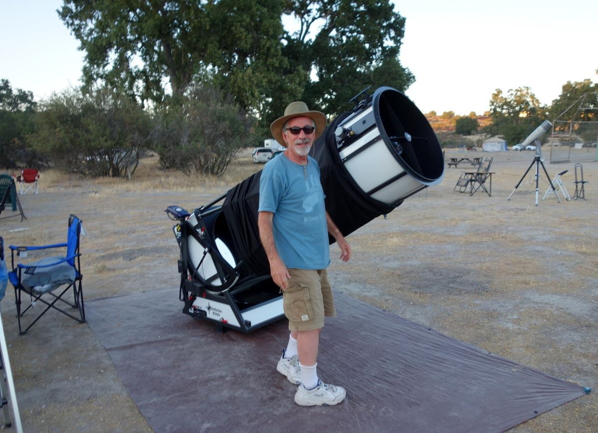
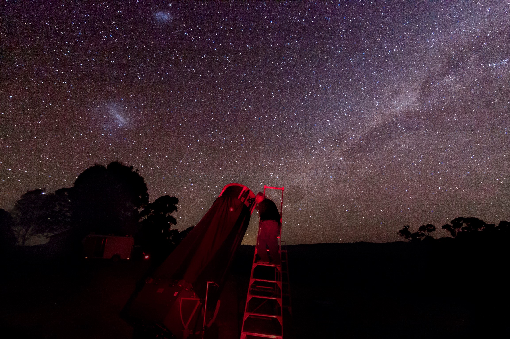
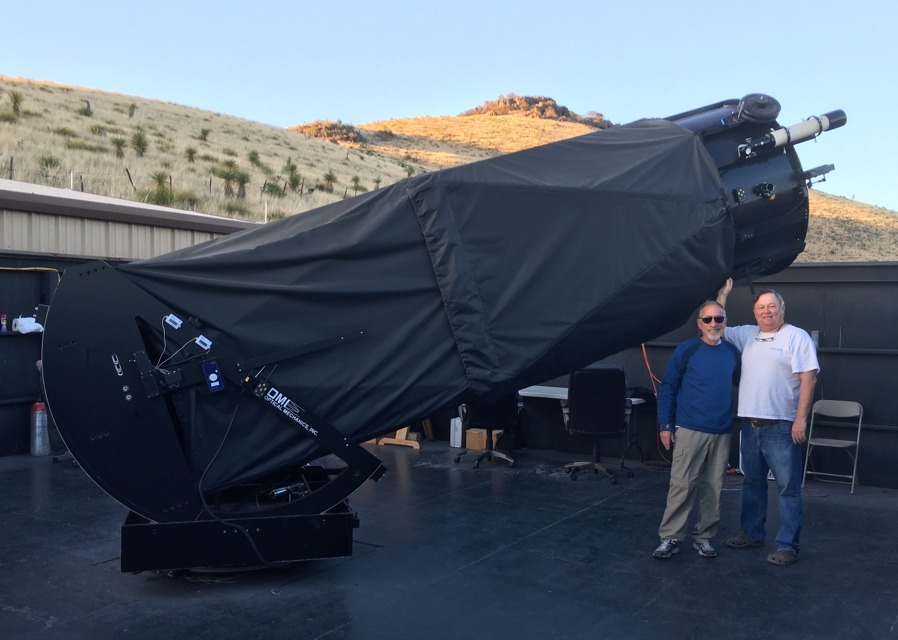
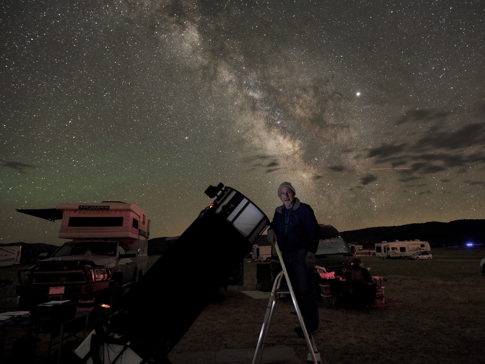
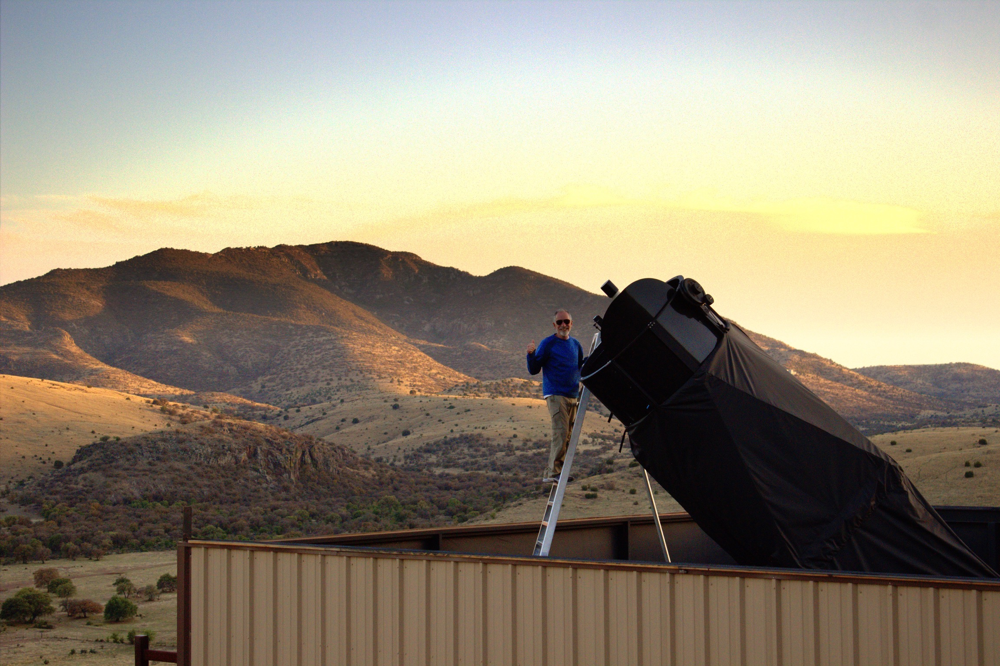

A Visual Journey Through the Universe
Over 24,700 deep sky objects observed and documented by Steve Gottlieb across 45+ years of visual astronomy — the most comprehensive single-observer record of the NGC, IC, and UGC catalogs ever compiled.






Steve Gottlieb is one of the most prolific visual deep sky observers in the history of amateur astronomy, and the only person known to have visually observed every object in the New General Catalogue. His decades-long systematic survey of the NGC, IC, and UGC catalogs represents an unparalleled personal record of the deep sky.
Born in Los Angeles, California in 1949, Gottlieb earned a master's degree in mathematics from UC Berkeley in 1973 and went on to teach high school math in the East Bay for 37 years. He began serious deep sky observing in the late 1970s, starting with the Messier objects through a 6-inch reflector. What began as a personal exploration of the night sky evolved into a monumental multi-decade project: visually observing every object in the New General Catalogue.
In 2014, he completed all NGC objects north of −41° declination from his observing sites in northern California. Three years later, after multiple trips to Australia for the far southern sky, he observed his final NGC object, NGC 2932, on October 18, 2017 at the OzSky Star Safari in New South Wales, becoming the only person known to have accomplished this feat.
Following the NGC, Gottlieb turned his attention to the Index Catalogue (IC), completing its nearly 1,529 entries. The last IC object, IC 1493, was observed on October 18, 2025, exactly eight years to the day after finishing the NGC.
Throughout his career, Gottlieb has used progressively larger instruments:
A contributing editor for Sky & Telescope, Gottlieb has authored 46 articles for Sky & Telescope and Astronomy magazines, covering topics from galaxy clusters to planetary nebulae, interacting galaxies to Wolf-Rayet bubbles. He is a principal investigator for the NGC/IC Project, helping verify historical identifications of thousands of deep sky objects, and contributed to the DeepMap 600 star chart.
Search and explore over 24,700 deep sky objects with detailed visual observations, historical context, and cross-references.
Field reports from the eyepiece — observing sessions, trip accounts, and detailed notes from dark sky sites across the globe.
Steve Gottlieb has authored 46 articles for Sky & Telescope and Astronomy magazines, guiding observers to some of the most fascinating deep sky targets.